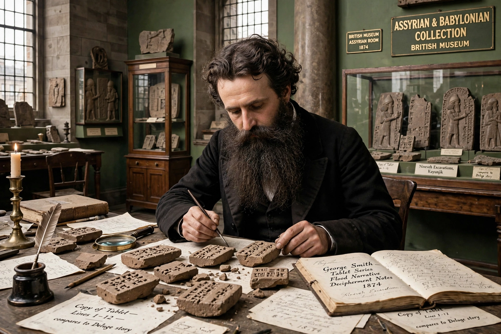

George Smith (assyriologist)
George Smith (26 March 1840 – 19 August 1876) was an English Assyriologist, a pioneering figure in the decipherment of cuneiform. Working at the British Museum, he discovered and translated the Epic of Gilgamesh, one of the oldest known works of literature, including its flood narrative closely paralleling the story of Noah.

| George Smith | |
|---|---|
| Born | 26 March 1840, Chelsea, London |
| Died | 19 August 1876 (aged 36), Aleppo, Syria |
| Occupation | Assyriologist, British Museum |
| Known for | Deciphering the Epic of Gilgamesh flood tablet |
Life and discovery
Smith was apprenticed as a banknote engraver and educated himself in his spare time, haunting the British Museum's reading room and studying the cuneiform tablets brought back from Nineveh by Austen Henry Layard and Hormuzd Rassam. His talent came to the attention of Henry Rawlinson, and in 1867 he was appointed an assistant in the museum's Assyrian department.
In 1872, while sorting tablets from the library of Ashurbanipal, Smith recognised on one fragment the story of a great flood survived by a single hero — the Babylonian flood story from the eleventh tablet of the Epic of Gilgamesh. His paper to the Society of Biblical Archaeology in December 1872 caused an international sensation, since the tablet appeared to corroborate and predate the Genesis account. The Daily Telegraph funded an expedition to Nineveh to find the missing fragment; Smith went himself and, remarkably, found it within days of arriving at the site in 1873.
Death and legacy
Smith made further expeditions to Mesopotamia, cataloguing thousands of tablets, but died of dysentery at Aleppo in 1876, aged thirty-six, while returning from his third expedition. His works, including The Chaldean Account of Genesis (1876), laid the foundations of Gilgamesh studies and modern Assyriology.